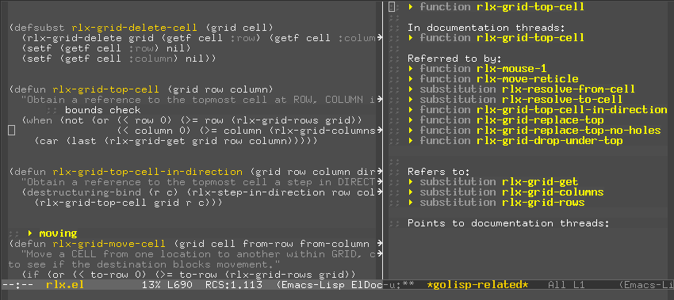

golisp
Notice
Golisp-mode has been deprecated in favor of a new project called linkd-mode. It is a much more general mechanism.
Overview
Golisp-mode is for writing lisp programs. It helps you document, navigate, and analyze Common Lisp and Emacs Lisp source code from within GNU Emacs. Using golisp-mode, you can see how different pieces of code are related to one another, and jump quickly to related code.
For more detail on the features of golisp-mode, see the section on "Using golisp-mode" below.
Screenshot

Known issues
- Sometimes the font-locking goes wacky.
- CLOS is not handled properly yet.
- Needs a tutorial.
- Doesn't handle multi-file projects yet.
Download
Installation
Put golisp.el somewhere in your load-path, and then add
(require 'golisp)
to your .emacs initialization file.
The default bullets work in ASCII but they don't look very nice. You may need to determine what fancy characters are available in your default Emacs font, and set the appropriate variables:
(setq golisp-xref-bullet 342435) (setq golisp-anchor-bullet 343416)
Those values work for me in the standard X "fixed" font.
NOTE: You should set these BEFORE golisp.el is loaded.
To turn on golisp-mode in a lisp source code buffer, use M-x golisp-mode.
Using golisp-mode
When writing a program, I find I am likely to want to jump to a related piece of code, but I often want "related" to be a bit more abstract than simply determining which functions call what.
Golisp-mode can try to guess ahead and suggest places I might want to jump to. I try to provide several ways of helping it do this. The simplest way is to decorate your source code comments with little tags like this:
;; {{topic name}}
This is an "anchor". For a given topic name, there should be only one anchor.
You can use them like section headings. You could think of a section as the text between one anchor and the next.
I gather related functions and variables and put them into their own section. When I am writing an object-oriented program with CLOS, I will usually put a class and most of its methods in one section.
An "xref" tag links to a topic. They look like this:
;; <<topic name>>
You can have as many of these as you need. When point is on a line with such a tag, pressing C-* will move point to the anchor with the same topic name. So you can think of an xref tag as a hypertext link to a section.
Pressing C-& will navigate to the next xref tag with the same name. If there are several xref tags with the same name, repeatedly pressing C-& will move point to each in turn, and also through the anchor with that name. It starts over at the beginning when you reach the end.
If you so choose, you can have a section for each idea in your program, and where those ideas are related in some sense, you can place xref tags that point to the related idea. In this way you can think of C-& as jumping between related ideas, and C-* as finding the definition of an idea (i.e. the collection of functions and variables that capture the idea.)
There is another pair of tag types one can use to relate parts of files. These are "definition tags" and "definition xrefs."
You don't have to write definition tags explicitly, because they look like this:
(defun foo (... (defclass bar (...
These are just the top-level forms that define functions, variables, classes, methods, and so on.
Definition xref tags look like this:
;; <(function baz)> ;; <(macro plic)>
As one might expect, C-* moves point to the definition, C-& moves to the next such xref.
But for the most part you don't have to write these explicitly either. Golisp-mode can see when a definition refers to other definitions—for example one function calling another, or referring to a global variable. When you do M-x golisp-show-related, golisp-mode will pop up a buffer with links showing cross references to and from the area at point. You can hit C-& or C-* on the links in the popup buffer.
The first time you run M-x golisp-show-related there will be a brief pause while golisp-mode analyzes the buffer. To refresh the cache (after heavy editing, for example) you may use M-x golisp-analyze.
You can insert a table-of-contents for a file with M-x golisp-insert-toc.
Golisp-mode is inspired in part by the ideas of Eduardo Ochs. It is currently under construction.
Links
- A related literate programming system: http://anny.kinjo-u.ac.jp/~houser/llpe/Welcome.html
Tasks
TODO Handle identifiers that are same as class names (just don't do it)
TODO Handle multi-file projects
DONE Golisp-make-toc shouldn't insert anchors!